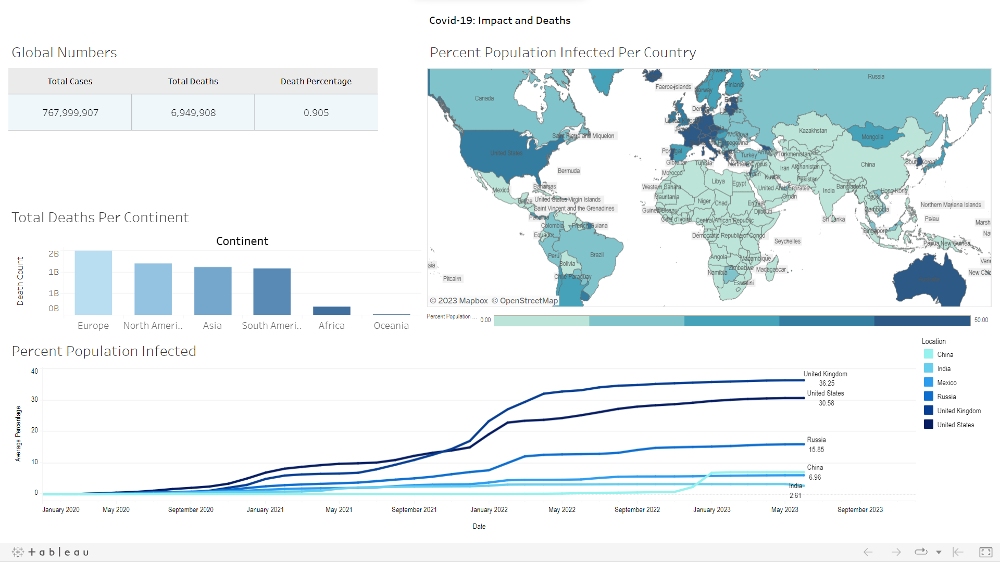

Covid-19
Global Analysis
This project aims to provide global insights into deaths and infections caused by the pandemic.
Introduction
In this project, I performed a comprehensive analysis of COVID-19 data, contributing to our collective understanding of the pandemic's impact worldwide.
Goal
Assess the impact of the global pandemic on mortality and health, identifying trends and correlations in COVID-19 cases, deaths, and infections.
Results
The results of the project are presented through interactive Tableau visualizations that provide a clear overview of the analysis of the COVID-19 data. Also, a concise report located at the end of this page summarizes the most important results.
Tools used:
- Data collection: Website: "Coronavirus Pandemic (COVID-19)". Published online at OurWorldInData.org.
- Data exploration and analysis: Excel/SQL.
- Data Visualization: Tableau.
Case - What is the health impact of COVID-19 on a global scale?
- The total number of COVID-19 cases worldwide is approximately 768 million cases, with nearly 7 million reported deaths, resulting in a fatality rate of approximately 0.905%. This indicates that approximately 1 in 100 individuals diagnosed with COVID-19 succumbed to the disease.
- The percentage of the population infected with COVID-19 across countries ranges from low infection rates of less than 1% to high infection rates of over 70%.
- The five countries with the highest percentage of their population infected with COVID-19 were: Cyprus located in the Eastern Mediterranean (73.76%), San Marino located in Southern Europe (72.16%), Brunei located in Southeast Asia (68.77%), and Austria located in Central Europe (68.00%). This analysis shows that the countries most affected by the pandemic were not significantly close to each other in terms of geographic proximity. Instead, it highlights how the pandemic had a global impact affecting nations across different regions.
- Europe and North America have the highest total death counts, with approximately one billion five hundred million and one billion two hundred million deaths, respectively. These regions have been severely impacted by the COVID-19 pandemic.
- Oceania, consisting of countries like Australia and New Zealand, has the lowest total death count among all the regions, with approximately almost eleven million deaths.
- The temporal evolution of COVID-19 cases between the countries: China, India, Mexico, Russia, United Kingdom, And United States shows similar periods of fluctuation and, in some cases, subsequent waves. In the other hand, the timing and magnitude of infection peaks varied among the countries. While some nations saw early surges, others experienced higher cases in later stages.
- Covid Website (data collection): Click here.
- Git Hub (SQL code for the analysis process): Click here.
- Tableau (visualization): Click here.
I performed an in-depth analysis of COVID-19 data that revealed key insights such as the total number of cases and deaths worldwide, the severity of the pandemic's impact, patterns of spread, differences across the continent, and trends in specific countries. over time. Stakeholders can view additional information on an interactive Tableau dashboard, and the SQL code used for analysis is available for reference.
Visualization:
Click here to interact with the Tableau Visualization.
-
